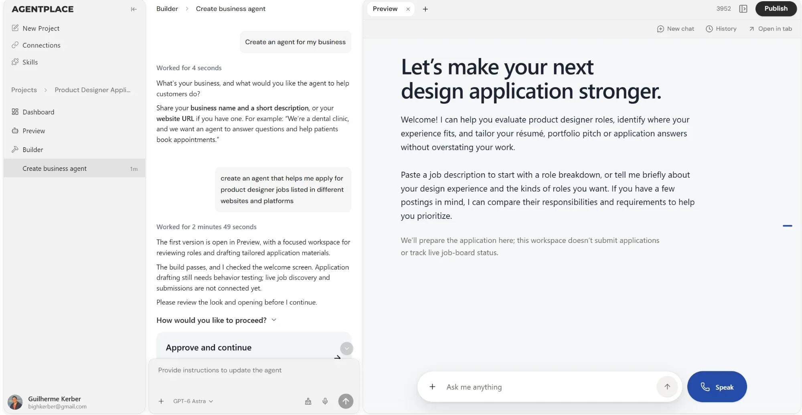
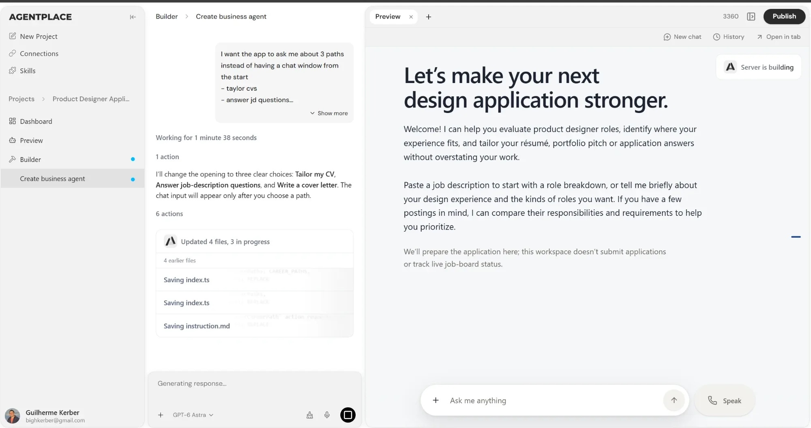
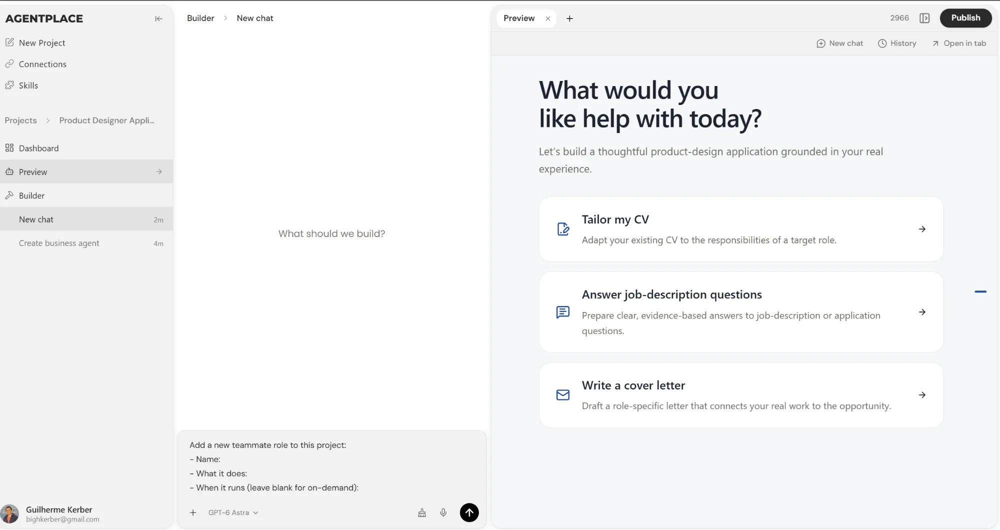

UI review · Job application test · 2026
Agentplace UI review
I used Agentplace to build an agent that helps me apply for product designer roles, then asked it to change the opening into three paths: tailor a CV, answer job-description questions, and write a cover letter. These are the three moments where the interface made me stop and work out what I was looking at.
Finding 01
-
A chat inside a chat is hard to tell apart
The builder is a conversation on the left, and the agent I built is also a conversation on the right, with its own input and the same light surface. Both panels ask me to type something, so it is easy to give the builder's instruction to the agent, or the other way round. Nothing says the right panel is the output, the thing I'm making.
SuggestionFrame the right panel as the product being built. Show the agent's name at the top of the preview and give it a different surface, for example an inverted theme or a distinct background, so the builder and the agent read as two separate apps.

Finding 02
-
A rebuild replaces the previous version
When I asked for the three paths, the preview showed "Server is building" and then swapped the old version for the new one, with no way back to it. Iterating on an agent means comparing outputs: without the earlier version I can't tell whether a change made it better, and a bad rebuild costs me the version that worked.
SuggestionOpen each rebuild as a new tab next to the current one, such as "Preview #2". The tab bar and the "+" button are already there, so this adds simple version control without a new pattern.

Finding 03
-
The Preview menu item opens something unexpected
Clicking Preview in the sidebar starts a new builder chat, while the right panel loads a preview of something else I built earlier in the project. A navigation item should take me to a place, not start a new session, and here neither panel shows the agent I was working on.
SuggestionTreat preview as an action on what the builder made. Show a preview card for the result inside the builder chat, and add a Preview button in the secondary style next to Publish, so previewing always refers to the current build.
